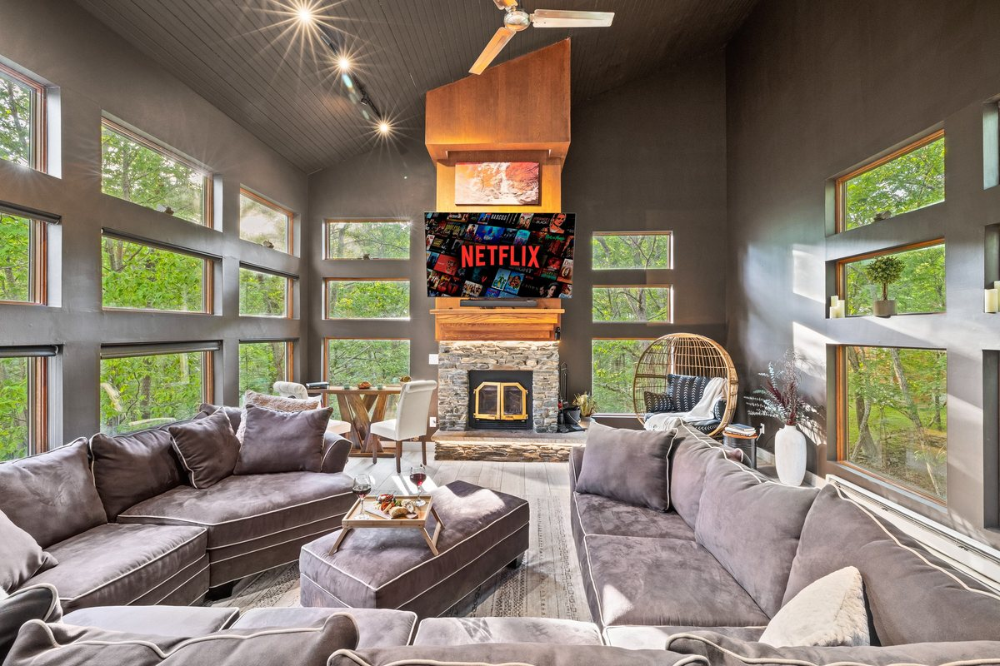
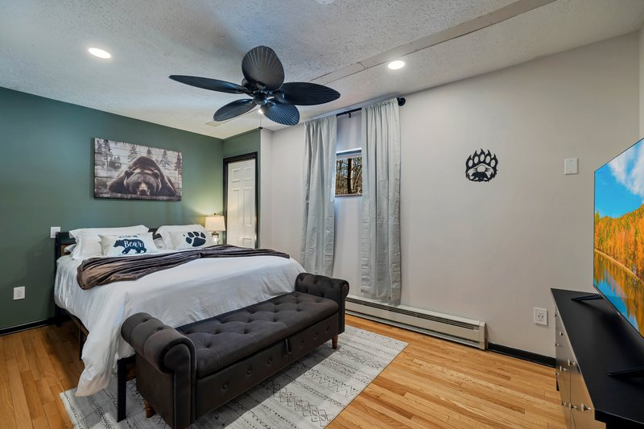
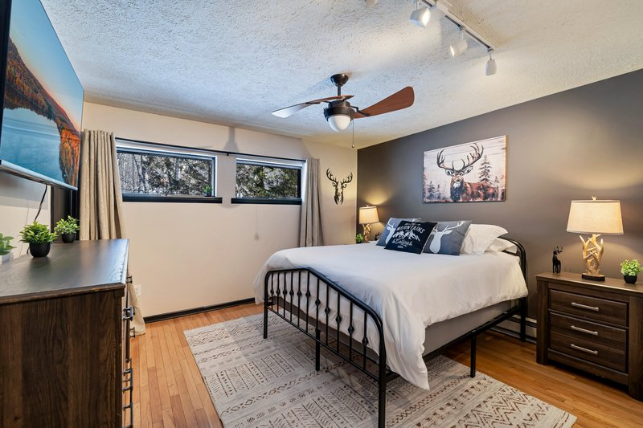
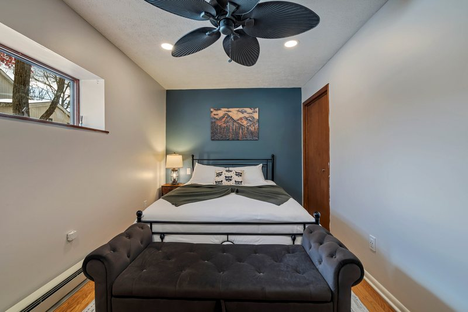
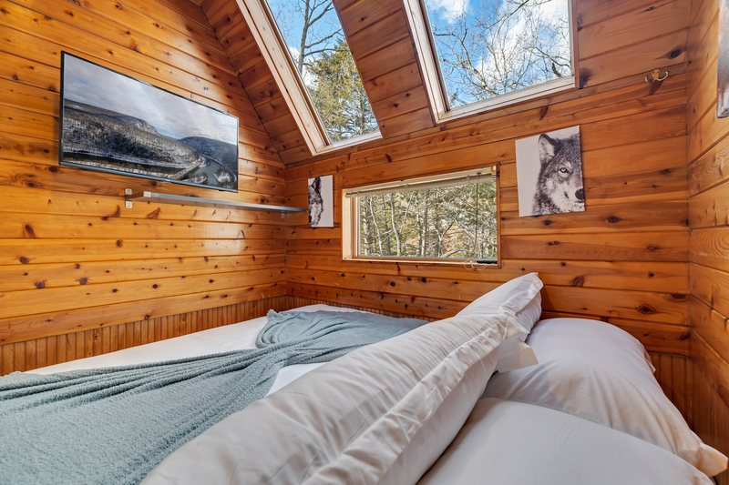
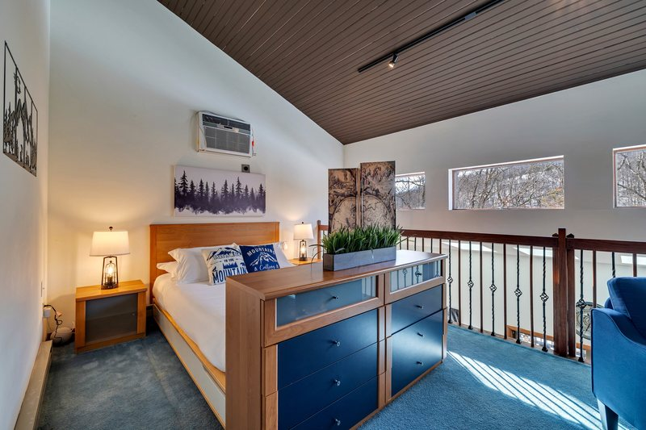
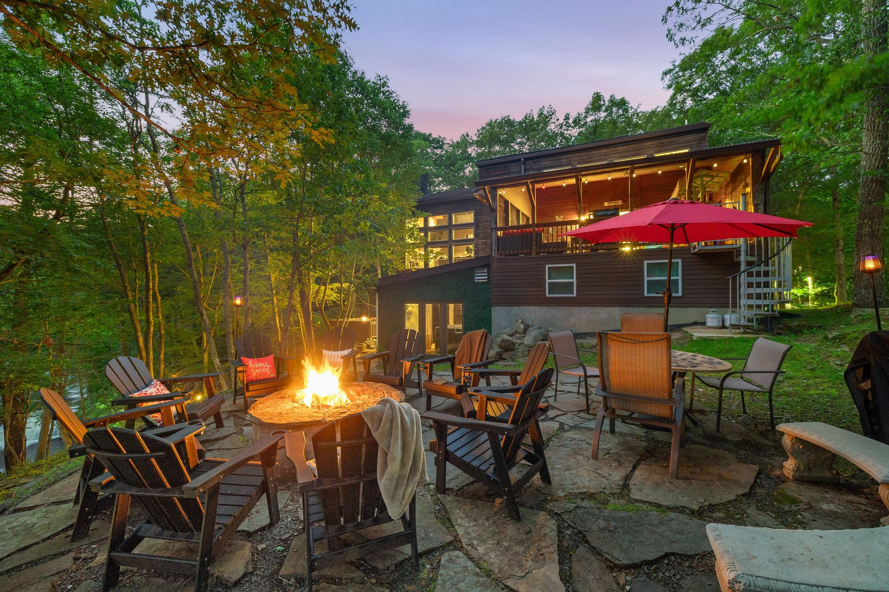

Check available dates, stay rules, pet approval, and fees in one place.
Bushkill, Pennsylvania
Waterfall Wonder
A luxury Poconos cabin wrapped in forest and waterfall views, with a hot tub, game room, fire pit, dog-friendly stays, and easy gathering space for groups up to 12.
- Sleeps
- Up to 12
- Layout
- 2 kings + 5 queen-size / 3 baths
- Setting
- Waterfall views
- Stay style
- Hot tub, games, dogs
Review house rules, Saw Creek registration, and arrival planning before you reserve.
Airbnb and Vrbo reputation signals were last checked May 11, 2026.
Use the direct page for current policies, amenity guidance, and availability.
Guest reviews
Guests keep coming back to the waterfall.
Public Airbnb and Vrbo reviews point to the same things again and again: the sound of the falls, the stocked kitchen, the hot tub, the game room, and a house that works beautifully for families and groups.
Airbnb
5.0 / 52 reviews
Vrbo
9.8 / 150+ reviews
Airbnb score and count were checked on May 11, 2026. Vrbo regional pages showed the same 9.8/10 score with varying public review-count displays; visit each platform for current totals and complete guest feedback.
Direct booking
Book with the clearest path to the stay details.
WanderHome is the clearest place to review the live booking calendar, stay policies, pet approval details, Saw Creek registration guidance, and house rules before you reserve Waterfall Wonder.
Current availability
Check open dates, fees, and reservation terms through the direct booking page.
Stay-specific rules
Review pet approval, community registration, waterfall guidance, and seasonal rules before booking.
Platform options remain
Prefer Airbnb or Vrbo? Those links stay available for guests who want a platform booking.
Luxury Poconos cabin rental
A forest house with a reason to gather.
Inside, Waterfall Wonder shifts from wide-open views to warm conversation: a dramatic living room window wall, quiet decks, a hot tub, a game room, and comfortable spaces that keep the whole group connected.
The house works for family trips, couples traveling together, and celebration weekends that want comfort, views, and room to spread out.

The creekside setting
The waterfall is not a backdrop. It is the mood of the house.
Morning coffee by the windows, evenings by the fire, and slow afternoons outside all share the same soundtrack: a natural Poconos creek and waterfall.
Natural terrain, honest expectations.
Steep natural terrain. Enjoy the waterfall from the property and follow posted guidance and property rules; there is no maintained public path or staircase to the water.
Stay highlights
A high-comfort base for the Poconos.
Hot tub with a view
Unwind after hikes, ski days, or quiet cabin afternoons with a dedicated hot tub setting.
Game room downtime
Pool, arcade-style entertainment, and relaxed hangout space keep the house lively after dark.
Fire pit evenings
Gather outside in the woods, then come back inside to warm, comfortable living spaces.
Dog-friendly stays
Bring approved dogs along and keep the whole group together for the weekend.
Saw Creek access
Community amenities add resort-style options, subject to rules, hours, seasons, passes, and availability.
Space for groups
Two king beds, four queen beds, a queen-size sleeper sofa, and three baths support groups of up to 12 guests.
Find your weekend
Three ways Waterfall Wonder earns the trip.
Poconos cabin with waterfall views
For guests searching for a Bushkill cabin rental with a true natural setting, the waterfall and creek views are the reason this house stands apart.
Hot tub and game room retreat
Stay in after a day in the Delaware Water Gap region with the hot tub, fire pit, game room, and large gathering spaces ready for the evening.
Dog-friendly Saw Creek stay
Approved dogs can join the trip, and Saw Creek community amenities add flexible options for groups, subject to rules, hours, fees, and availability.
Photo tour
See the stay from arrival to firelight.
After dark
The house glows when the woods go quiet.
Evenings at Waterfall Wonder are built around firelight, warm deck lights, forest-facing decks, and easy indoor gathering space after a day in the Poconos.
Good for: fire pit conversations, covered hot tub wind-downs, game-room nights, and slow dinners on the screened deck.
Firepit, hot tub, community amenities, and outdoor use remain subject to current house rules, community rules, seasons, and weather.
Amenities
The details guests ask about most.
Outside
- Waterfall and creek views
- Decks and screened outdoor spaces
- Fire pit and outdoor gathering areas
- Propane grill and outdoor dining
Inside
- Dramatic living room window wall
- Game room and arcade-style entertainment
- Comfortable kitchen and dining areas
- Roku/TV entertainment and high-speed Wi-Fi
Stay Practical
- 2 king beds, 4 queen beds, and a queen sleeper sofa
- 3 bathrooms and flexible sleeping space for up to 12 guests
- Dog-friendly stays by approval
- Saw Creek community amenities, subject to community rules
Sleeping layout
Two king beds and five queen-size sleeping options.
Waterfall Wonder accommodates up to 12 guests with 2 king beds, 4 queen beds, 1 queen-size sleeper sofa with a queen mattress, and 3 bathrooms, giving family groups, friends, and multi-couple stays a flexible place to land.
Guests
Up to 12
Beds
2 kings + 5 queen-size
Bathrooms
3
Pets
Dogs by approval
One queen-size sleeping option is a pull-out sofa sleeper with a queen mattress. For room-by-room placement, house rules, fees, and availability, use the direct booking page before reserving.





Saw Creek and the Poconos
Quiet cabin privacy, with community amenities nearby.
The Bushkill location puts you in the Poconos with access to Saw Creek community amenities and the surrounding Delaware Water Gap region. Community amenities, passes, fees, hours, and seasonal availability are managed under Saw Creek rules.
Guest safety
Guest safety and access notes.
Use the safety notes for waterfall terrain, roads, fire pit use, community registration, pets, and seasonal amenities before arrival.
Natural creek terrain
Treat the waterfall as a view and natural setting. Use the safety notes for the fuller terrain guidance before arrival.
Weather and roads
Mountain weather can affect arrival, outdoor stairs, decks, roads, and activity plans. Review weather and manager guidance before traveling.
Burn rules can change
Use the safety notes and house guidance before planning fire pit time, especially during dry or windy weather.
Community registration
Amenities, passes, registration, hours, fees, and guest access are controlled by Saw Creek and can change by season or policy.
Outdoor amenities vary
Pools, beach access, outdoor dining, grilling, outdoor shower use, and similar features may depend on season, weather, and rules.
Local guide
Explore near Waterfall Wonder.
Choose one good outing, keep a weather backup in mind, and leave room for the reason guests book the house: waterfall views, the hot tub, the game room, and unhurried cabin time.
Plan the stay
Master guide
Things to do near Winona Falls
A starting point for waterfalls, towns, food, family fun, and weather backups.
Weekend planSample Poconos weekend plan
One main outing, real time at the cabin, rainy-day backups, and an easier checkout morning.
SafetyGuest safety and access notes
Waterfall terrain, winter roads, burn rules, Saw Creek access, pets, and seasonal amenities.
Explore nearby
Waterfalls
Waterfalls near Winona Falls
Bushkill Falls, NPS waterfall notes, Dingmans status cautions, and rounded drive bands.
FamilyFamily things to do near Bushkill
Nature centers, museums, animal encounters, indoor waterparks, and easy kid-friendly plans.
WinterWinter fun near Waterfall Wonder
Shawnee, Camelback, indoor waterparks, cinema nights, and hot-tub-friendly winter backups.
Rainy dayRainy-day things to do near Bushkill
Wet-weather outings, indoor stops, dinner ideas, and cabin downtime that still feels planned.
Food and drinkBreweries, wineries, and date nights
ShawneeCraft, Sango Kura, Mountain View, Stroudsburg, Frogtown, and adults-only resort ideas.
Choose the right fit
Dog-friendly
Pet-friendly Poconos cabin
Dog approval, pet limits, house rules, hot tub restrictions, cleanup expectations, and policy notes.
Group staysLarge-group Poconos cabin
Plan around 12 guests, six beds, game-room time, common areas, parking logistics, and booking notes.
Waterfall stayWaterfall cabin near Bushkill Falls
Separate the property waterfall setting from the public Bushkill Falls attraction nearby.
Good to know
Questions guests usually ask first.
Where is Waterfall Wonder?
Waterfall Wonder is in Bushkill, Pennsylvania, in the Poconos and Saw Creek area.
How many guests can stay?
The public listing baseline is up to 12 guests, with 2 king beds, 4 queen beds, 1 queen-size sleeper sofa with a queen mattress, and 3 bathrooms.
Is the cabin dog-friendly?
Yes, dogs are allowed by approval. Use the booking page for pet limits, fees, and house rules before reserving.
Can guests use Saw Creek amenities?
Saw Creek amenities are a meaningful part of the stay, but access is subject to community rules, registration, passes, hours, seasons, fees, and availability.
Can guests walk to the waterfall?
The property has waterfall and creek views, but the terrain is natural, steep, and not maintained as a public path or staircase. Follow guest guidance and posted safety warnings.
What should we review before booking?
Review the booking page for rental agreement timing, Saw Creek registration, pet approval, amenity pass limits, waterfall access risk, winter weather or road conditions, burn-ban rules, and house policies.
Where should I book?
Direct booking through WanderHome is the primary booking path. Airbnb and Vrbo links are also available for guests who prefer those platforms.

Plan your stay
Settle in after the day out.
Review dates, policies, and availability directly with WanderHome.